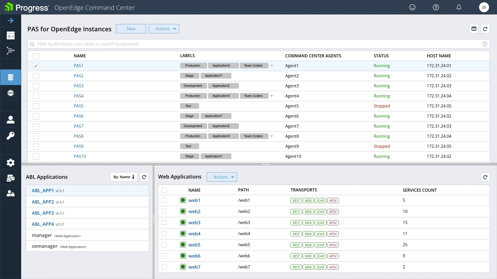
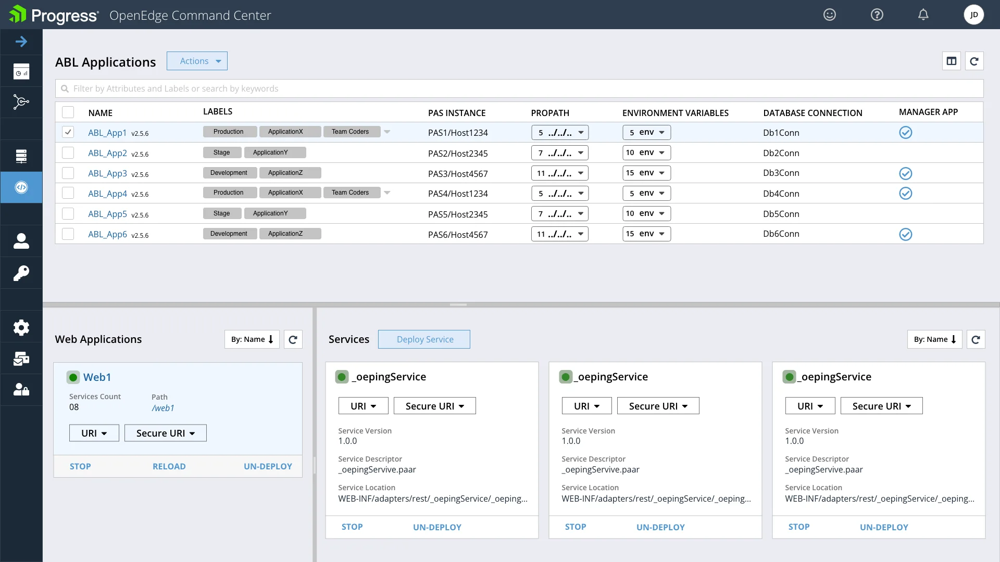
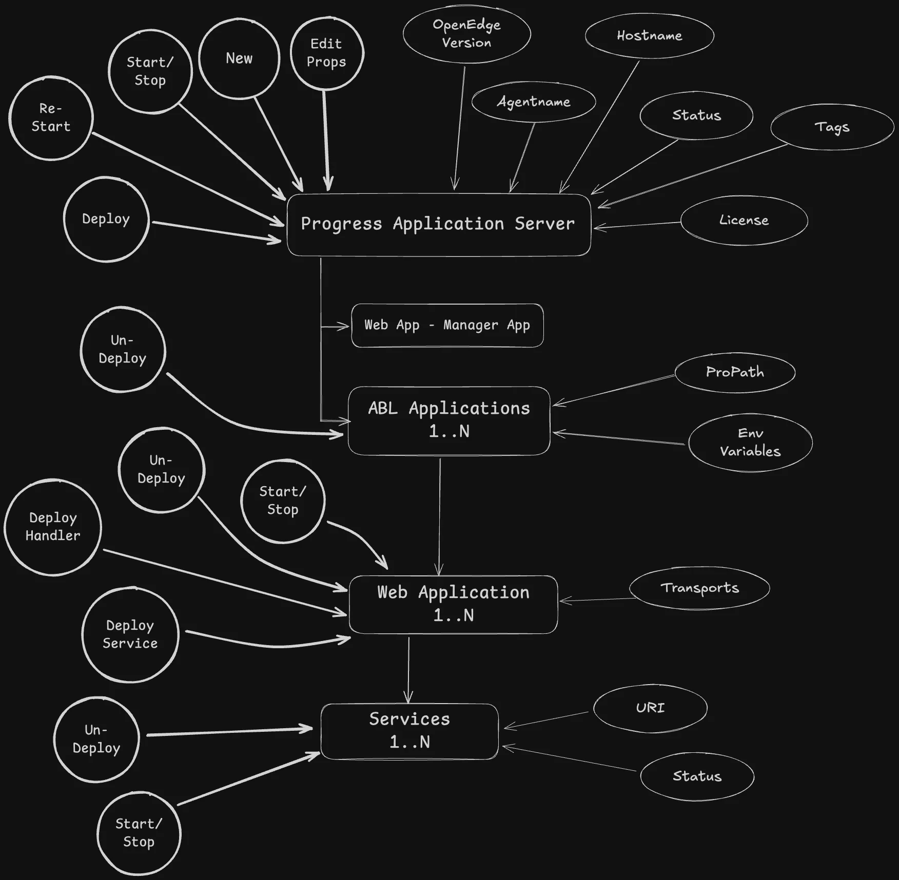

One server-management IA, split by persona: PAS for DevOps Engineers, ABL Applications for developers.

Before: a 5-6 level hierarchy where users got lost and breadcrumbs ran long.
Administering Progress Application Server meant a 5-6 level information architecture. Long-term customers told us they got lost, and it was pulling down OpenEdge CSAT.
Interviews and personas showed that DevOps Engineers care about servers and ABL Developers care about applications. I split the IA into one page for each.
Customers gave positive feedback, and analytics showed PAS server actions through OECC increased a lot.